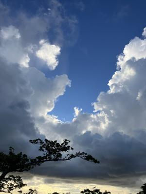
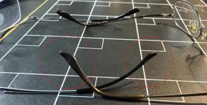

うるがいの話 ある日
最新: 新しいメガネ【うるがいの話 ある日】とは 一日だけのプログです
『うるがいの話』の最新一日だけのプログで、通信料が少なく経済的だ。カニの画像をクリックすると全ての日付が載る『うるがいの話』サイトを表示します
|
|
【うるがいの話】 うるがい(ｳﾙｶﾞｲ urugai)とは、『もずくがに』の名前でとても大きくなります。 |
|---|---|
|
|
【カミマヤーの話】 猫のことを方言でマヤーといいます。カミマヤー（kamimayaa）とは、神の猫のことです。 |
|
【たながぁの音楽】 たながぁ（ﾀﾅｶﾞｰ tanagaa）とは手長えびのことで、何種類かあり大きいのは車 エビぐらいになります。 |

|
【ぶながぁの話】 ぶながぁ(ﾌﾞﾅｶﾞｰ bunagaa)とは、赤い髪の毛、赤い身体、そして身長は１ｍ２０ｃｍ ぐらい、川の蟹を食べているの目撃された。場所は沖縄県国頭郡大宜味村のと ある村僕の隣近所に住んでいる爺さんから、聞いた話です。 |
|
|
【ギーマの話】 ギーマ(giima)とは、山原の里山に咲くスズランに似た、 花を付けます。実は食べられます、 気が付くと口の周りが紫になっています。 |
2025年09月21日 (日）新しいメガネ
16:41

メガネの先セルが、細い新しいメガネをつける。補聴器との被り
が少ないのでストレスが、減る。ただし、華奢なメガネなのでジ
ョギングでは利用しない。これで、メガネは３種を使い分けしな
がら、生活しないといけない。普段、パソコンを利用する場合は
中近両用メガネ（主に室内での使用を想定して、中間距離と近距
離に焦点を合わせたメガネ）と新しいシャイなメガネと、ジョギ
ング用の物。ジョギングに使うものは、以前中近両用メガネと使
用していたが、視力が変化して普段使う近視ようとして利用して
いるが、視力は０．７度より下がっていると思う（免許更新の検
査でやばかった）。だから、１．２に調整された新しいメガネと
切り替え時には目に違和感が生じる。マ、そのうち慣れてくるの
でしょう。下は、中近両用メガネと華奢なメガネの先セルの違い
である。

ジョギング用の先セルは、中近両用メガネよりやや太めである。
中近両用メガネは、２００９年頃資格試験を受けるために勉強し
ていた時、同じ資格試験で先行していたイサ君が、中近両用メガ
ネを利用して方がいいよと薦めて利用し始めた。その時から、眼
鏡は二つ使いわけをした。